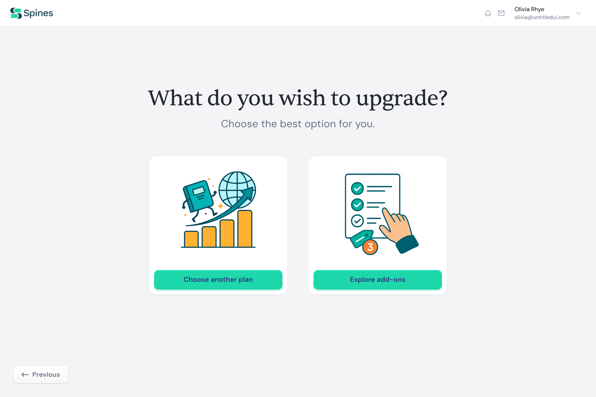
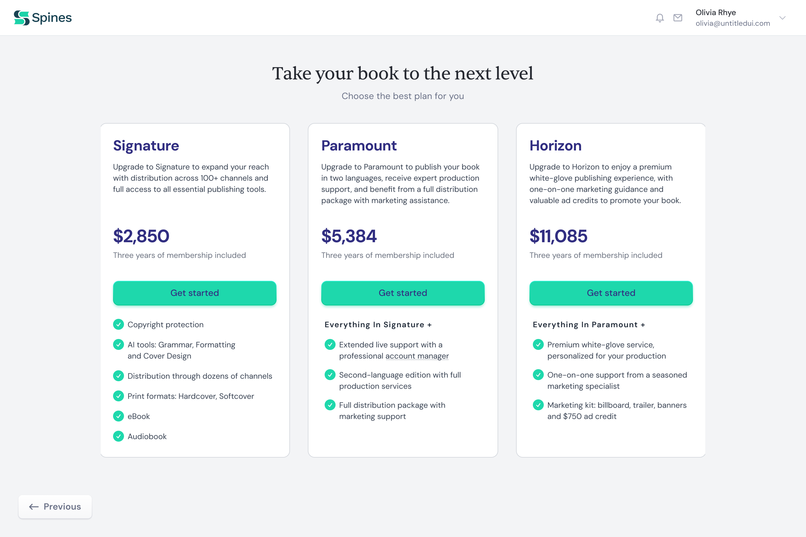
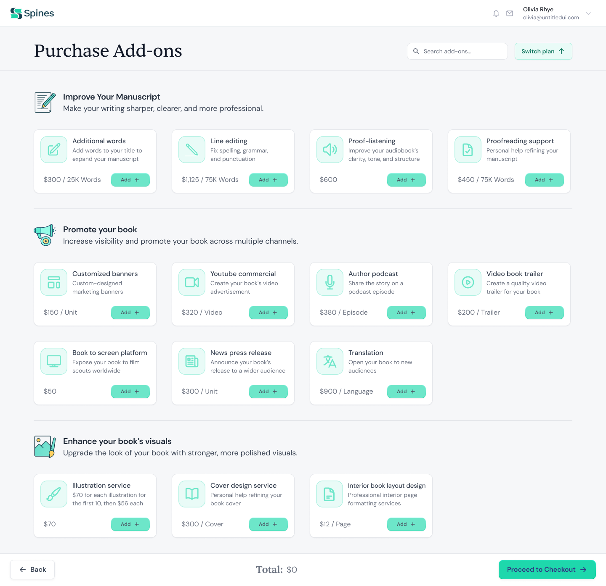

Spines - Upgrade Experience
- Company
- Spines
- Role
- Product Designer
- Platform
- Web
Before this flow existed, upgrading a plan or buying an add-on meant going through sales or support. I designed a self-serve system that handles both paths: moving to a higher plan, or purchasing individual services, without disrupting an active publishing project and without requiring authors to understand Spines' full pricing model first.
Entry Point
A Simple Decision Point
Authors arriving at this screen have different intentions: some want to change their plan, others just want to add a service. The entry screen separates both paths upfront so neither group has to wade through the other's options.
- Two distinct paths presented upfront
- Clear language that maps to author intent
- No dead ends, both paths lead to meaningful action

Path 1
Plan Upgrade
Showing the full plan comparison to every author creates unnecessary noise for someone already on mid-tier. The upgrade view adapts to the user's current subscription, showing only the delta: what they'd gain by moving to the next plan.
- Dynamic view based on the user's current plan
- Highlights incremental benefits, not the full feature set
- Removes cognitive load of comparing irrelevant tiers

Path 2
Purchase Add-ons
For authors who want to expand without changing their plan, this path lets them add individual services directly. Services are grouped by category, searchable, and priced individually, with a running total that stays visible so the decision is never ambiguous before checkout.
- Categorised service catalog, easy to browse
- One-time purchases and quantity-based add-ons
- Search bar for quick access to specific services
- Running total with a persistent checkout action

The Split
The early question was whether plan upgrades and add-on purchases could share a single flow. Both involve reviewing options and completing a purchase, and merging them would reduce the number of screens.
The problem is that they involve different decisions. A plan upgrade is a broader choice about the level of publishing support an author needs. An add-on is more specific - a particular service, a targeted need. Putting both in one flow would force users to compare things that are not equivalent and make a harder first decision than necessary.
The two-path structure was designed to answer one question first: do you need a bigger package, or just one extra service? That decision shapes everything that follows.
Outcome
Upgrade and add-on purchases moved from a manual process - handled through sales or support - into a structured in-platform flow inside the dashboard. The design supports two distinct purchase intentions within one entry point, reducing the risk of users conflating a plan upgrade with an add-on purchase.